Welcome! I'm a Postdoc at New York University, where I'm part of Qi Sun's Immersive Computing Lab.

Publications
2026
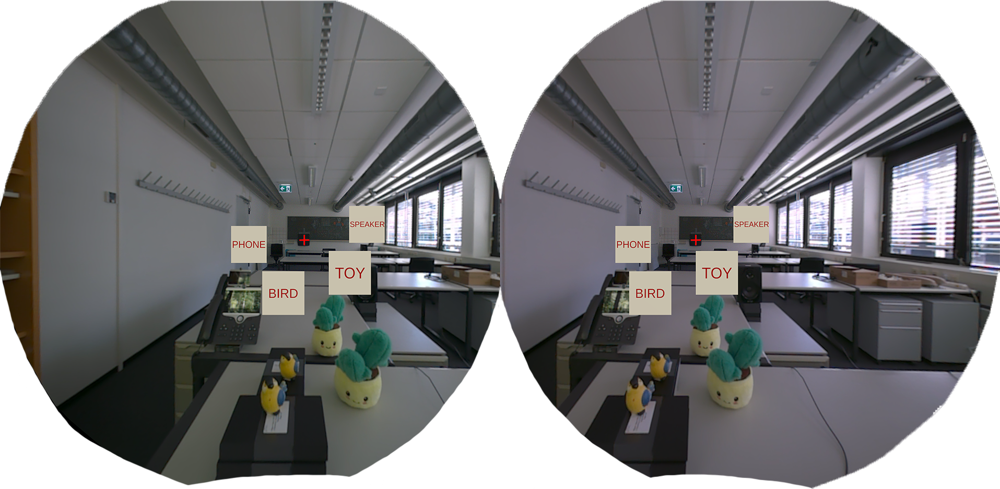
in IEEE Transactions on Visualization and Computer Graphics (TVCG, Proc. IEEE VR)
March 2026
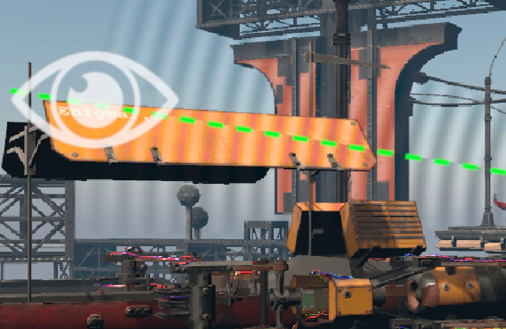
in IEEE Transactions on Visualization and Computer Graphics (TVCG, Proc. IEEE VR)
March 2026
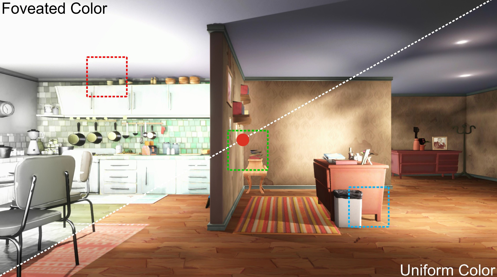
in Proc. IEEE Conference on Virtual Reality and 3D User Interfaces (VR)
March 2026
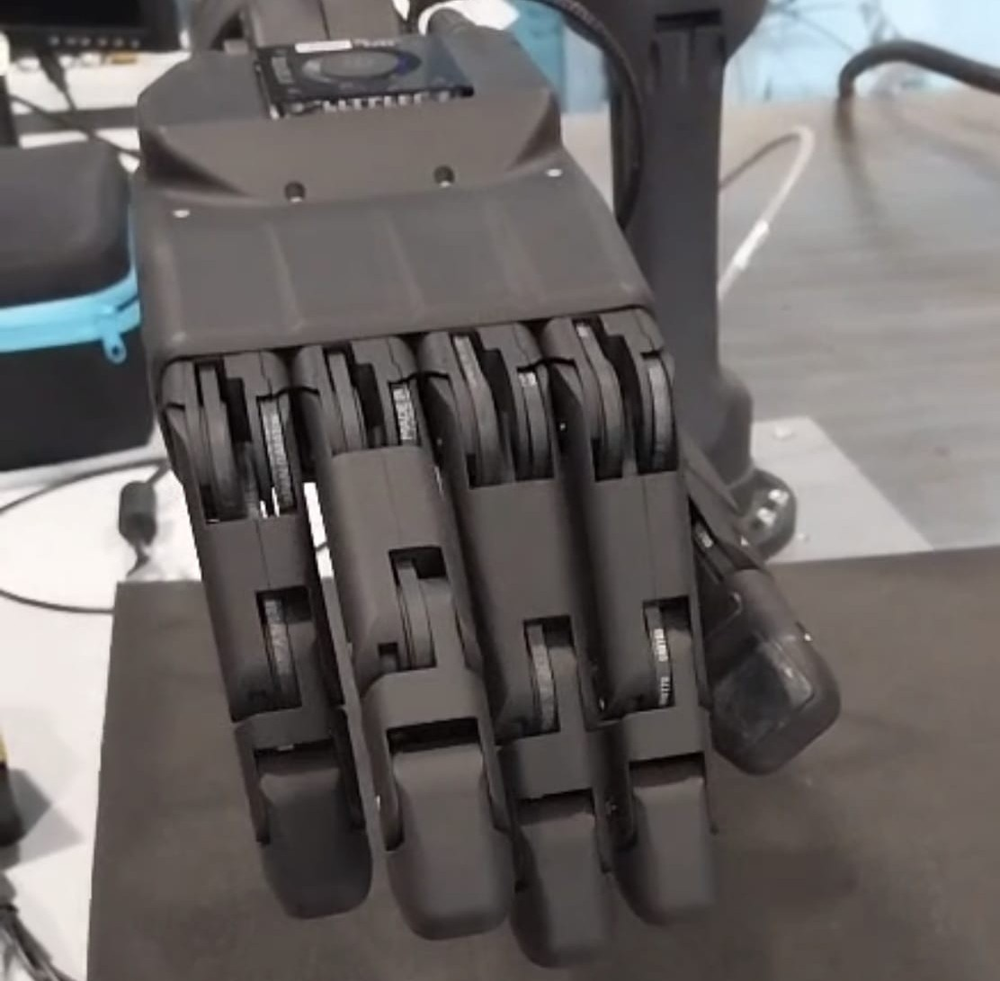
in Frontiers in Robotics and AI
2026
2025
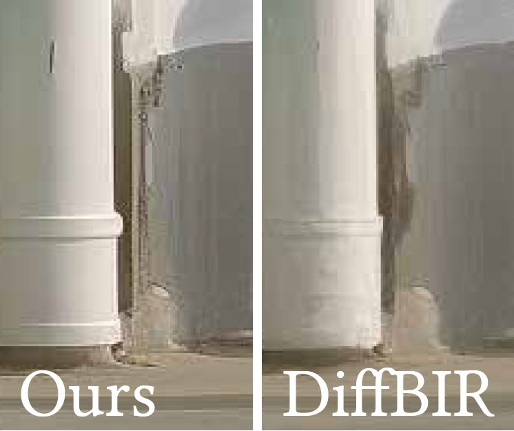
in ACM Transactions on Graphics (TOG, Proc. ACM Siggraph Asia)
Honorable Mention Award
2025
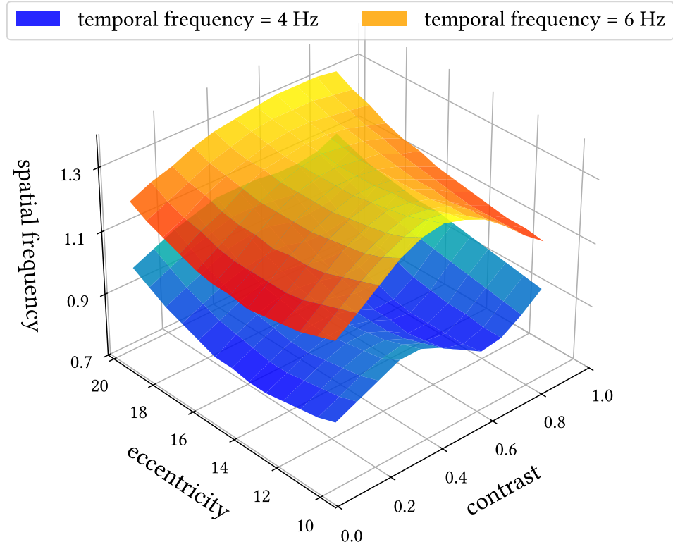
in IEEE International Symposium on Mixed and Augmented Reality (ISMAR)
2025
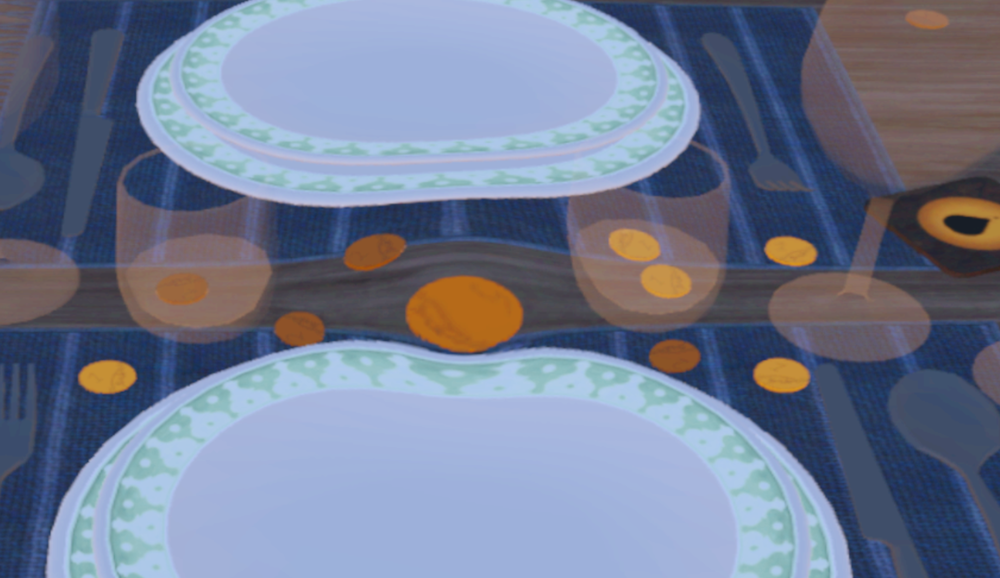
in IEEE Transactions on Visualization and Computer Graphics (TVCG, Proc. IEEE ISMAR)
2025
2024
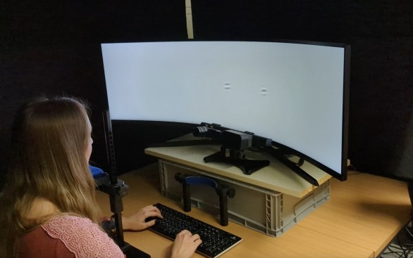
in Proc. ACM Symposium on Applied Perception (SAP)
August 2024
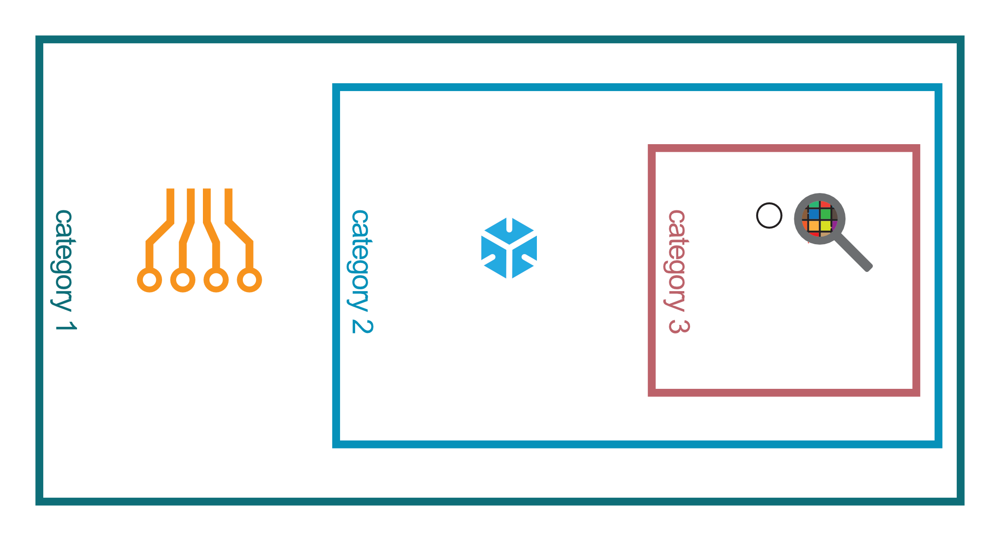
PhD thesis, TU Braunschweig
August 2024
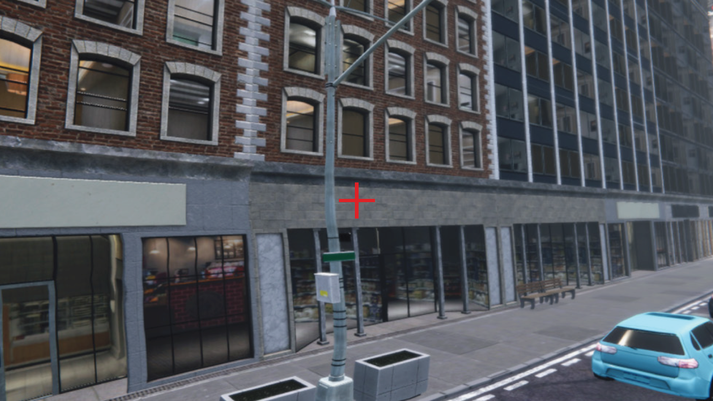
in ACM Transactions on Graphics (TOG, Proc. ACM Siggraph)
July 2024
2023
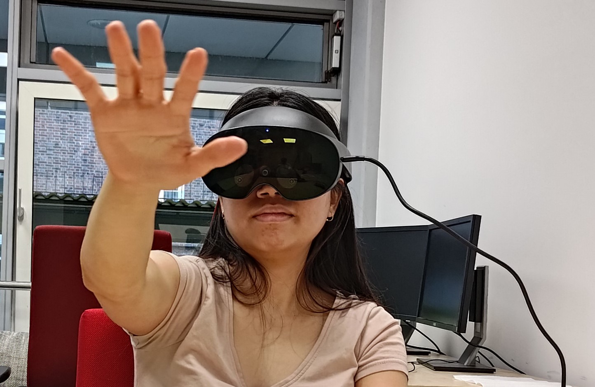
in ACM Symposium on Virtual Reality Software and Technology (VRST)
August 2023
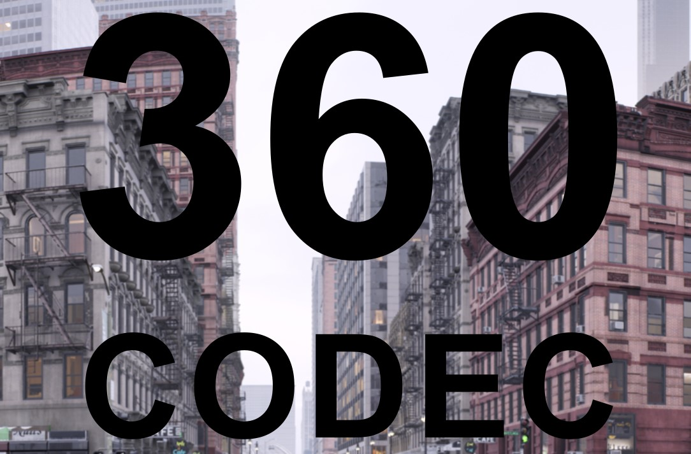
in IEEE Transactions on Visualization and Computer Graphics (TVCG, Proc. IEEE VR)
February 2023
2022
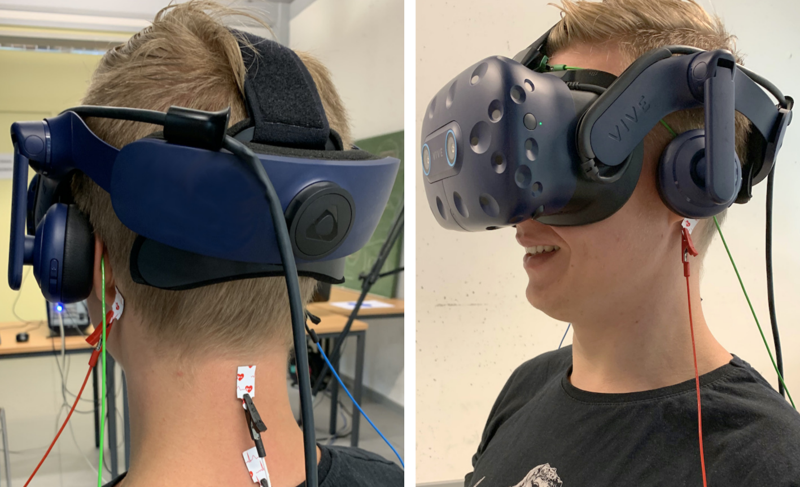
in IEEE Transactions on Visualization and Computer Graphics (TVCG, Proc. IEEE VR)
Honorable Mention Award
March 2022
2021
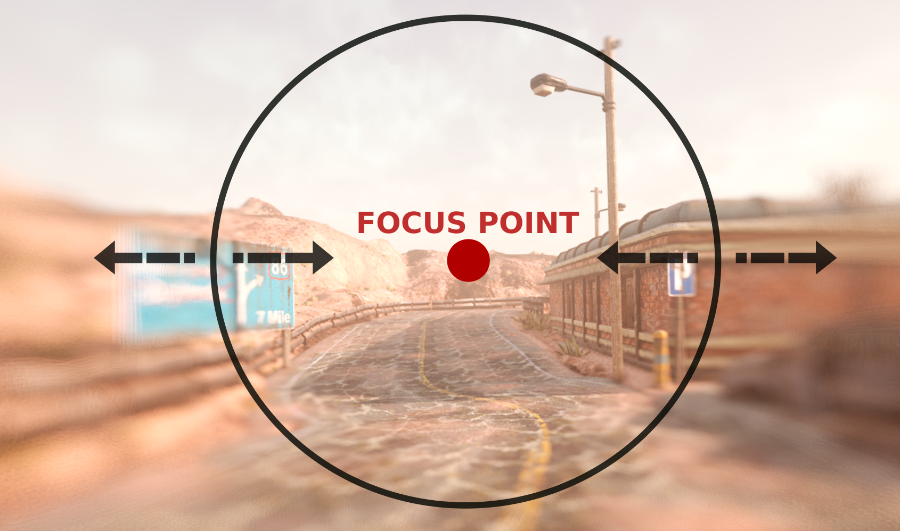
in Proc. IEEE Conference on Virtual Reality and 3D User Interfaces (VR)
March 2021
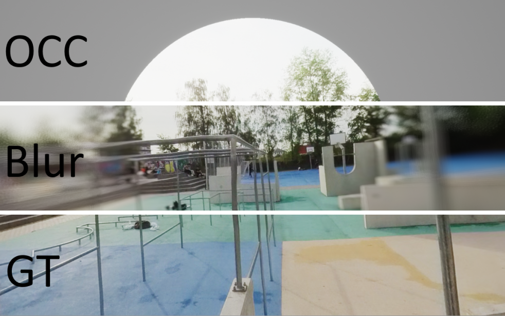
in IEEE Virtual Reality Workshop on Immersive Sickness Prevention (WISP)
March 2021
2020
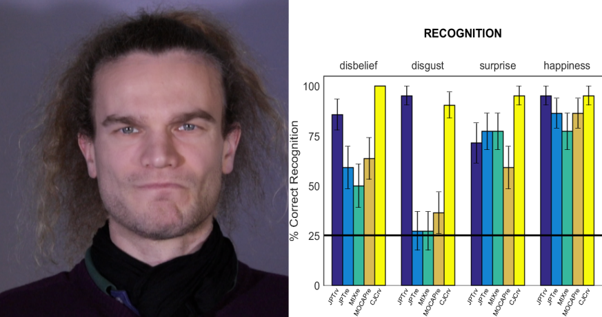
in Proc. International Conference on Computer Animation and Social Agents (CASA)
November 2020
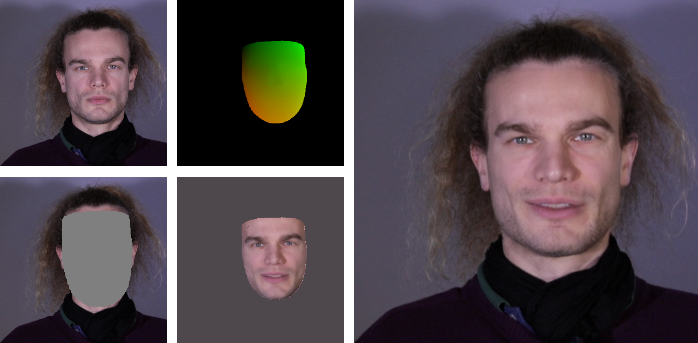
Master's thesis, Institut für Computergraphik, TU Braunschweig
"AI-Talent" Award of the German Ministry
April 2020
Academic Journey
Postdoctoral Researcher
New York University
NY, USA
Postdoctoral Researcher
Max Planck Institute for Informatics
Saarbrücken, Germany
Visiting Researcher
Università della Svizzera italiana
Lugano, Switzerland
Ph.D. Student
Technische Universität Braunschweig
Braunschweig, Germany
Master Student
Technische Universität Braunschweig
Braunschweig, Germany
International Studies
University of Manitoba
Winnipeg, Canada
Bachelor Student
Ostfalia University of Applied Sciences
Wolfenbüttel, Germany
Contact
Colin GrothNew York University
Immersive Computing Lab
370 Jay Street
NY 11201
USA